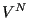
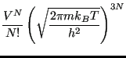

Analogous to the quasi-classical microcanonical paritition function of Eq. 6, here is the quasi-classical representation of the canonical partition function:
is the Hamiltonian function which computes the energy of a point in phase space. The probability of a point in phase space is represented as
So, the general “sum-over-states” ensemble average of quantum statistical mechanics, first presented in Eq. 1, becomes an integral over phase space in classical statistical mechanics:
where
is the value of the observable at phase space point
. Before moving on, it is useful to recognize that we normally simplify this ensemble average by noting that, for a system of classical particles, the usual choice for the Hamiltonian has the form
 |
(49) |
where
 is the kinetic energy, which is only a function of momenta, and
is the kinetic energy, which is only a function of momenta, and  is the potential energy, which is only a function of position. The canonical partition function,
is the potential energy, which is only a function of position. The canonical partition function,  , can in this case be factorized:
, can in this case be factorized:
The quantity in the left-hand braces is the ideal gas partition function, because it corresponds to the case when the potential is 0. (Note that we have multiplied and divided by ; this is the equivalent of scaling the positions in the integration over positions.) The quantity in the right-hand braces is called the configurational partition function, .
Because the kinetic energy
has the simple form,
where is the mass of particle  , the integral over particle momenta can be evaluated analytically:
, the integral over particle momenta can be evaluated analytically:
|
 |
|
(54) |
| |
|
|
(55) |
(We have assumed all particles have the same mass,  ; in the case
of distinct masses, this is just a product of similar factors.)
; in the case
of distinct masses, this is just a product of similar factors.)
becomes
|
|
 |
(56) |
|
|
|
(57) |
where is the de Broglie wavelength, a quantum-mechanical property of a particle inversely proportional to its momentum (and thus inversely proportional to the square root of temperature):
As an example, for a hydrogen atom with mass 1 amu and at room temperature (298 K),
1 Å. The de Broglie wavelength limits the precision by which a particle's position can be determined; for H atoms at room temperature, one is not permitted to specify their positions with a precision finer than about 1 ångstrom without violating the Heisenberg uncertainty principle of quantum mechanics. However, as we will see, in classical molecular simulations, we must lift this restriction, while never forgetting that this makes a classical representation of a molecule somewhat less realistic.
With the momentum degrees of freedom handled at finite temperature, when the observable is a function of positions only, the ensemble average becomes a configurational average:
![$\displaystyle \left<G\right> = Z^{-1}\int d{\bf r}^N \exp\left[-\beta U\left({\bf r}^N\right)\right] G\left({\bf r}^N\right).$](img208.png) |
(59) |
Note that the integration over momentum yields a factor
in both the numerator and denominator, and thus divides out. We can write this configurational average using a probability distribution,
 , as
, as
where
is called the “canonical probability distribution.” As pointed out on p. 15 of Frenkel & Smit [1], Eq. 59 is “the starting point for virtually all classical simulations of many-body systems”; that is, it is the starting point for almost all simulations discussed in this course.
cfa22@drexel.edu